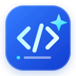

Pinned by CodeAssist

CodeAssistLIVE CODE REVIEWShare your screen, explain what you are seeing, and review the problem together. CodeAssist follows the live context and turns useful moments into findings and suggested changes.
Live screen frames and microphone audio stream to Gemini. Pasted or dropped code, typed messages, and review context are also sent. When you end the session, the transcript, pinned notes, and suggested patches are sent to Gemini to create the report.
CodeAssist does not store session data in an app database or modify your local files. Your selected review mode is saved in this browser. Google's API terms govern its processing and retention of data sent to Gemini.
VS Code's embedded browser may not support screen sharing. Open this page in desktop Chrome or Edge to start a review.
A Gemini API key must be configured on the server; the key itself is never sent to your browser.
Talk naturally, or type a message. Share a file for exact line references.
CodeAssist's structured summary could not be generated. Showing the findings and notes captured during your session.